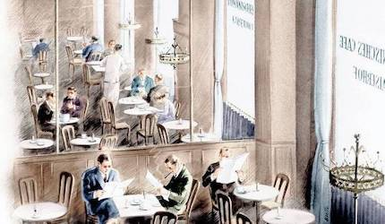
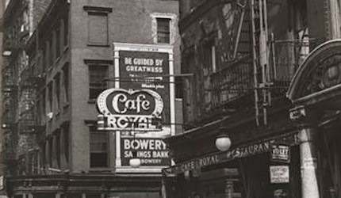
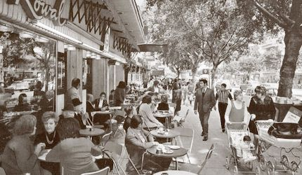
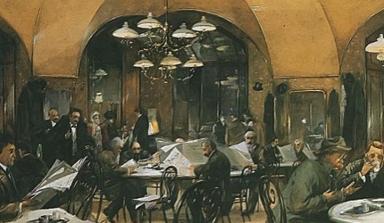
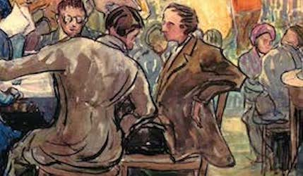

Mapping Modern Jewish Cultures
Learn more about key people and events which shaped Jewish culture in the café by exploring StoryMaps which offer detailed narratives incorporating historical maps, photographs, paintings, and literature. Some StoryMaps offer an in-depth look at Jewish café culture in a specific city, some illustrate the life and career of a person important to café culture, and others explore an overarching theme.
All Stories

Jewish Café Culture in Berlin

Jewish Café Culture in New York City

Jewish Café Culture in Tel Aviv-Jaffa

Jewish Café Culture in Vienna

Jewish Café Culture in Warsaw

Mapping Jewish Café Culture in Odessa

S.Y. Agnon in the Café

The Travels of Sholem Aleichem and Menakhem Mendl